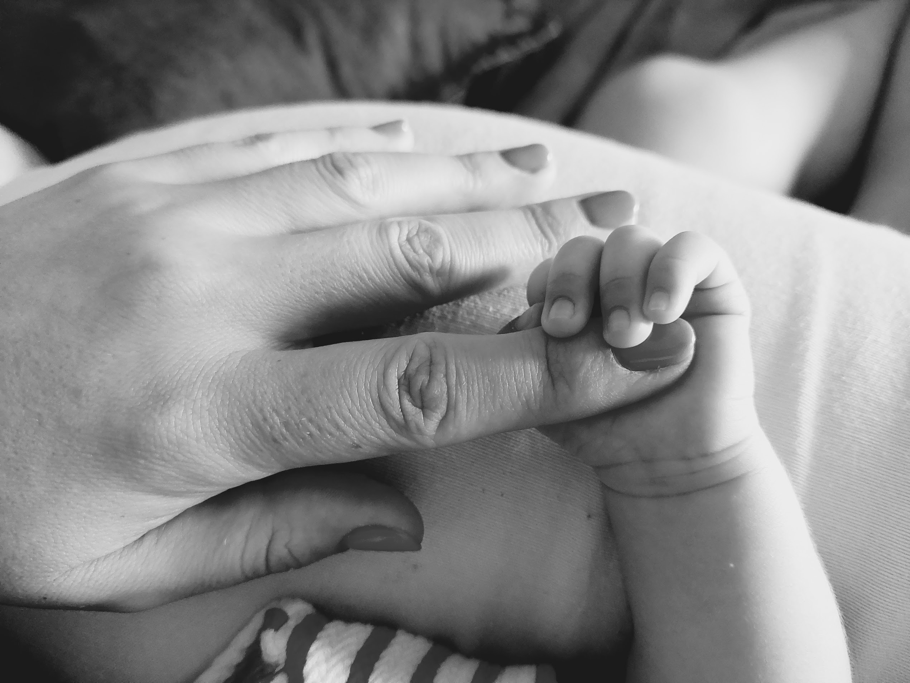

1985, Torres Novas
A Cátia Rosário é Coordenadora dos Gabinetes Técnico e de Métodos e Proteção Anticorrosiva e ao Fogo.
Começou a sua carreira na Martifer Construções como projetista em 2010. Em 2018, iniciou o Gabinete Técnico e em 2019 o Gabinete de Métodos. A proteção anticorrosiva e ao fogo foi aparecendo gradualmente, sem que exista uma data oficial de início. Para ela, é muito interessante estar ligada a tantas temáticas diferentes e acompanhar as várias fases das obras, desde a análise inicial, aos problemas finais.
As pessoas que me rodeiam. O ambiente “familiar” apesar das diferenças entre funções, departamentos.
Aprofundar conhecimentos nas áreas em que presto serviços.
Fora engenharia civil, gosto muito de decoração de interiores, apesar de não ter qualquer capacidade na área.
A minha família.
As saudades dos que já partiram.
O meu avô e o meu pai, pessoas muito simples que conseguiram muito, tendo em conta o local e condições em que nasceram e cresceram.
Sofia, a minha filha, que me fez renascer.
Tempo, para fazer coisas úteis, mas principalmente para brincadeiras e inutilidades (como ver séries).
Chocolate.
Resiliência
Impaciência.
Em tudo e em nada, como 99% dos portugueses.
Chocolate.
Itália
Norwegian Wood, Haruki Murakami
Wake up - Arcade Fire
Ver séries e passear.
Prestar apoio aos restantes departamentos e juntos conseguirmos fazer mais e melhor.
Com a saída das chefias diretas acaba por ser o percurso natural.